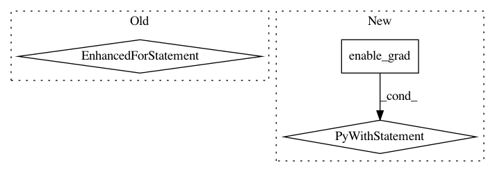

f364e492dfb287e4043d37fffa1bcef55e2ac5dd,torch/autograd/functional.py,,jacobian,#Any#Any#Any#Any#Any#,404
Before Change
return _tuple_postprocess(jacobian_output_input, (is_outputs_tuple, is_inputs_tuple))
jacobian: Tuple[torch.Tensor, ...] = tuple()
for i, out in enumerate(outputs):
// mypy complains that expression and variable have different types due to the empty list
jac_i: Tuple[List[torch.Tensor]] = tuple([] for _ in range(len(inputs))) // type: ignore
for j in range(out.nelement()):
vj = _autograd_grad((out.reshape(-1)[j],), inputs,
retain_graph=True, create_graph=create_graph)
for el_idx, (jac_i_el, vj_el, inp_el) in enumerate(zip(jac_i, vj, inputs)):
if vj_el is not None:
if strict and create_graph and not vj_el.requires_grad:
msg = ("The jacobian of the user-provided function is "
"independent of input {}. This is not allowed in "
"strict mode when create_graph=True.".format(i))
raise RuntimeError(msg)
jac_i_el.append(vj_el)
else:
if strict:
msg = ("Output {} of the user-provided function is "
"independent of input {}. This is not allowed in "
"strict mode.".format(i, el_idx))
raise RuntimeError(msg)
jac_i_el.append(torch.zeros_like(inp_el))
jacobian += (tuple(torch.stack(jac_i_el, dim=0).view(out.size()
+ inputs[el_idx].size()) for (el_idx, jac_i_el) in enumerate(jac_i)), )
jacobian = _grad_postprocess(jacobian, create_graph)
return _tuple_postprocess(jacobian, (is_outputs_tuple, is_inputs_tuple))
After Change
[0., 3.]]))
with torch.enable_grad():
is_inputs_tuple, inputs = _as_tuple(inputs, "inputs", "jacobian")
inputs = _grad_preprocess(inputs, create_graph=create_graph, need_graph=True)
outputs = func(*inputs)
is_outputs_tuple, outputs = _as_tuple(outputs,
"outputs of the user-provided function",
"jacobian")
_check_requires_grad(outputs, "outputs", strict=strict)
if vectorize:
if strict:
raise RuntimeError("torch.autograd.functional.jacobian: `strict=True` "
"and `vectorized=True` are not supported together. "
"Please either set `strict=False` or "
"`vectorize=False`.")
// NOTE: [Computing jacobian with vmap and grad for multiple outputs]
//
// Let"s consider f(x) = (x**2, x.sum()) and let x = torch.randn(3).
// It turns out we can compute the jacobian of this function with a single
// call to autograd.grad by using vmap over the correct grad_outputs.
//
// Firstly, one way to compute the jacobian is to stack x**2 and x.sum()
// into a 4D vector. E.g., use g(x) = torch.stack([x**2, x.sum()])
//
// To get the first row of the jacobian, we call
// >>> autograd.grad(g(x), x, grad_outputs=torch.tensor([1, 0, 0, 0]))
// To get the 2nd row of the jacobian, we call
// >>> autograd.grad(g(x), x, grad_outputs=torch.tensor([0, 1, 0, 0]))
// and so on.
//
// Using vmap, we can vectorize all 4 of these computations into one by
// passing the standard basis for R^4 as the grad_output.
// vmap(partial(autograd.grad, g(x), x))(torch.eye(4)).
//
// Now, how do we compute the jacobian *without stacking the output*?
// We can just split the standard basis across the outputs. So to
// compute the jacobian of f(x), we"d use
// >>> autograd.grad(f(x), x, grad_outputs=_construct_standard_basis_for(...))
// The grad_outputs looks like the following:
// ( torch.tensor([[1, 0, 0],
// [0, 1, 0],
// [0, 0, 1],
// [0, 0, 0]]),
// torch.tensor([[0],
// [0],
// [0],
// [1]]) )
//
// But we"re not done yet!
// >>> vmap(partial(autograd.grad(f(x), x, grad_outputs=...)))
// returns a Tensor of shape [4, 3]. We have to remember to split the
// jacobian of shape [4, 3] into two:
// - one of shape [3, 3] for the first output
// - one of shape [ 3] for the second output
// Step 1: Construct grad_outputs by splitting the standard basis
output_numels = tuple(output.numel() for output in outputs)
grad_outputs = _construct_standard_basis_for(outputs, output_numels)
flat_outputs = tuple(output.reshape(-1) for output in outputs)
// Step 2: Call vmap + autograd.grad
def vjp(grad_output):
vj = list(_autograd_grad(flat_outputs, inputs, grad_output, create_graph=create_graph))
for el_idx, vj_el in enumerate(vj):
if vj_el is not None:
continue
vj[el_idx] = torch.zeros_like(inputs[el_idx])
return tuple(vj)
jacobians_of_flat_output = _vmap(vjp)(grad_outputs)
// Step 3: The returned jacobian is one big tensor per input. In this step,
// we split each Tensor by output.
jacobian_input_output = []
for jac, input_i in zip(jacobians_of_flat_output, inputs):
jacobian_input_i_output = []
for jac, output_j in zip(jac.split(output_numels, dim=0), outputs):
jacobian_input_i_output_j = jac.view(output_j.shape + input_i.shape)
jacobian_input_i_output.append(jacobian_input_i_output_j)
jacobian_input_output.append(jacobian_input_i_output)
// Step 4: Right now, `jacobian` is a List[List[Tensor]].
// The outer List corresponds to the number of inputs,
// the inner List corresponds to the number of outputs.
// We need to exchange the order of these and convert to tuples
// before returning.
jacobian_output_input = tuple(zip(*jacobian_input_output))
jacobian_output_input = _grad_postprocess(jacobian_output_input, create_graph)
return _tuple_postprocess(jacobian_output_input, (is_outputs_tuple, is_inputs_tuple))
jacobian: Tuple[torch.Tensor, ...] = tuple()
for i, out in enumerate(outputs):
// mypy complains that expression and variable have different types due to the empty list
jac_i: Tuple[List[torch.Tensor]] = tuple([] for _ in range(len(inputs))) // type: ignore
for j in range(out.nelement()):
vj = _autograd_grad((out.reshape(-1)[j],), inputs,
retain_graph=True, create_graph=create_graph)
for el_idx, (jac_i_el, vj_el, inp_el) in enumerate(zip(jac_i, vj, inputs)):
if vj_el is not None:
if strict and create_graph and not vj_el.requires_grad:
msg = ("The jacobian of the user-provided function is "
"independent of input {}. This is not allowed in "
"strict mode when create_graph=True.".format(i))
raise RuntimeError(msg)
jac_i_el.append(vj_el)
else:
if strict:
msg = ("Output {} of the user-provided function is "
"independent of input {}. This is not allowed in "
"strict mode.".format(i, el_idx))
raise RuntimeError(msg)
jac_i_el.append(torch.zeros_like(inp_el))
jacobian += (tuple(torch.stack(jac_i_el, dim=0).view(out.size()
+ inputs[el_idx].size()) for (el_idx, jac_i_el) in enumerate(jac_i)), )
jacobian = _grad_postprocess(jacobian, create_graph)
return _tuple_postprocess(jacobian, (is_outputs_tuple, is_inputs_tuple))
def hessian(func, inputs, create_graph=False, strict=False, vectorize=False):
rFunction that computes the Hessian of a given scalar function.
Args:
In pattern: SUPERPATTERN
Frequency: 3
Non-data size: 3
Instances
Project Name: pytorch/pytorch
Commit Name: f364e492dfb287e4043d37fffa1bcef55e2ac5dd
Time: 2021-03-11
Author: ilqarramazanli@gmail.como
File Name: torch/autograd/functional.py
Class Name:
Method Name: jacobian
Project Name: cornellius-gp/gpytorch
Commit Name: 303217b34070dc47a86622b62764098999b0d7f5
Time: 2018-12-12
Author: gpleiss@gmail.com
File Name: gpytorch/lazy/lazy_tensor.py
Class Name: LazyTensor
Method Name: _quad_form_derivative
Project Name: facebookresearch/Horizon
Commit Name: 2a548989f90026395d3d47ccf15ac331728c64bf
Time: 2019-06-22
Author: jjg@fb.com
File Name: ml/rl/training/dqn_trainer.py
Class Name: DQNTrainer
Method Name: calculate_cpes